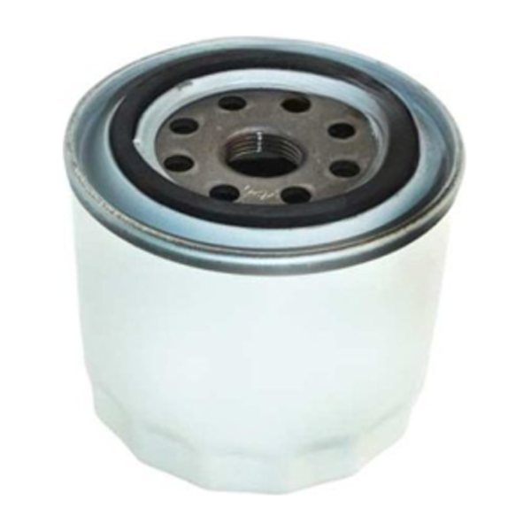

Available
Email for a quote
Doosan 38293-402 Transmission Filter
| OEM part number | 38293-402 |
| Fits | Doosan |
| Models / notes | D20/30G G20/30G |
| Category | Filters |
| Type | Aftermarket replacement |
Send us the quantity you need and we'll reply with pricing, usually within 24 hours. Not the exact part? We can source it. Send the part number or a photo.